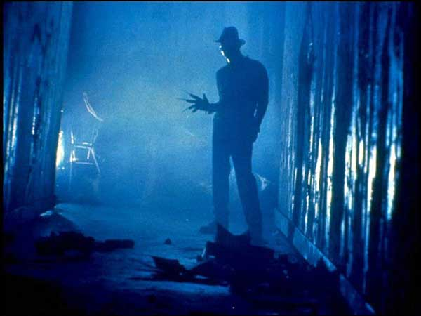

-
A Nightmare Remade: Dream Theory, Shirley Jackson, and the Uncanny
by Michael Merriam May 3, 2010
New studies in nightmare research are coming to a sad conclusion: bad dreams serve no purpose. Though scientists like Ross Levin and Tore Nielsen have postulated “fear memory extinction” as the function of nightmares, the less exciting but more persuasive arguments of G. William Domhoff of UC Santa Cruz are winning the day. In chronic sufferers, nightmares are hard to get rid of, and Domhoff compares them to headaches. He advocates “rescripting” the nightmare, and that’s a tried and true home remedy. As Freud began his work on dream interpretation in Vienna, in England, Alice in Wonderland, whose heroine “takes control” of her nightmare and ends it of her own power, was rising to popularity. Once Freud himself became prominent in America, Shirley Jackson reacted with The Haunting of Hill House, which was the basis of both Disney’s Haunted Mansion and Wes Craven’s Nightmare on Elm Street. Jackson’s wonderful misreading of Freud was that there is a kind of telepathy between people, living and dead, which, when repressed, became The Uncanny, which could manifest in the disfigurement of wallpaper into grinning faces, possession by the malevolent dead, and worse. The cure, for Freud, Lewis Carroll, and Shirley Jackson, was expanded consciousness. Awareness saved the day, or at least evened the score. (H. P. Lovecraft mutated “horror” into “weird tale” by creating a cosmos where awareness made things worse, not better.)
The 1984 classic Nightmare on Elm Street, with its sub-par acting, stupid villain, and tacked on “twist” ending, has finally been remade. Far from pandering to lovers of torture porn, the new movie rescues of the slasher genre from Hostel fans. And it’s a good film. It may, however, be good for bad reasons.
We have the sense, in this remake, that the world is a very bleak place. The young heroes’ lives don’t look like they’re really worth living. They hang out in creepy diners, bemoan their breakups, and envy the sterile “romances” of couples at neighboring booths. All they could have, if they survived, is the well-photographed but superfluous dystopia with which director Samuel Bayer encumbered his vision. That lessens the impact of the deaths. Craven’s Elm Street was a bright and cheerful place, where kids could be kids. They could swear, they could screw, and Freddy’s appearance in their dreams didn’t phase them much at first. The same was true of the film itself: like a child’s nightmare seen through adult eyes, the original Nightmare is no longer frightening. Further, the bogeyman’s pedophilia, once implicit, is now the sole criterion for Krueger’s wickedness. This was a mistake. The revelation of the story absolutely relies on his having been a child murderer. Burning a child murderer is always the right thing to do. We’re meant to understand the parents completely on that score. But in Craven’s version, we’re meant to shudder when we realize that they simply replaced their dead children by having new ones, and never spoke of it.
We have to compliment the purification of the genre. This is slasher. Things jump out and yell “boo!” a lot, and to dislike a film for that is ethnocentric: to criticize that would be to condemn the audience for liking the effect (and, oh boy, did they) which we must not do. It’s a “boo!” genre now, and slasher never ascends to become horror. In horror, we might be startled, but the method of the demise is more horrifying than the initial fright. Dario Argento perfected this, and Saw kept repeating these tragedies until they became farce. This movie eschews it. Beyond the opening, when a teenager opens his throat in a crowded diner, the demises of the protagonists aren’t very dreamlike or interesting. But the phantasmagoria of suburban weirdness is gone, too. Indispensable lines like “Freddy’s dead, because Mommy killed him” are replaced with nothing. The kids do their own detective work and discover their own histories. Craven carefully faked the stupidity of the parents, leaving them tragically in control of the kids destinies at all times. As energetic as those original heroes were, they couldn’t do much without their parents cooperation, which they never really got, even when they begged for it, screaming, from barred windows and through a haze of sedatives. In this film, the parents are just dingbats.
Also gone from the remake are the mini-essays of the original, which none of the fans seem to miss. The Balinese method of dream-control is no longer quoted. The camp stupidity of high school scenes was broken up, in 1984, with a lecture on Hamlet as a play about the futility of trying to discover the meaning of images. Like the gravediggers, says the on-screen teacher, we dig for explanations and find only grim comedy. In the original, when the line, “I could be bounded in a nutshell and count myself a king of infinite space, were it not that I have bad dreams” is uttered, the heroine has already succumbed to the nightmare, and the suspense is buoyed by another layer of existential hopelessness.
Though the first film looked cleaner, its cosmology was more fetid, a version of the quasi-mysticism of City of Glass: “This is how things are. Plenty of clues, no solutions.” (The franchise rewarded its customers with more and more revelations about Freddy’s origin, and the cosmology of withheld revelation is a commercial religion. Craven himself wanted the movie to be over once Nancy stopped believing in Freddy, and he wanted everyone brought back from the dead: it was all a dream. That ending is Alice in Wonderland‘s.)
Someone has a vested political interest in making sure nightmares never become tools of revelation: the remake’s failure to re-invent the central villain or maintain the affectedly beige personae of the parents (whose evil is the central insight of the 80s slasher genre–Jason’s mom, etc.) renders the film less eerie than simply wrong-headed. Because the fact is, the new film embraces the Catholicism of its doomed protagonist, Quentin, who, like the Pope, believes it was wrong to persecute a child molester. This is the message of this latest Nightmare, which should be recommended to all non-dissenting Catholics by their bishops: Nightmare on Elm Street is no longer an exploration. It is now an indictment, of Memory.